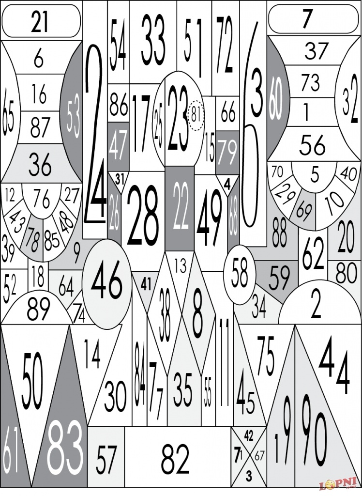
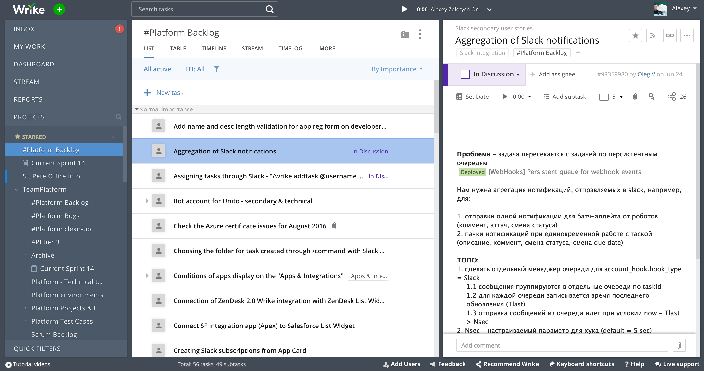
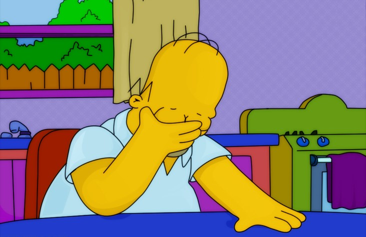
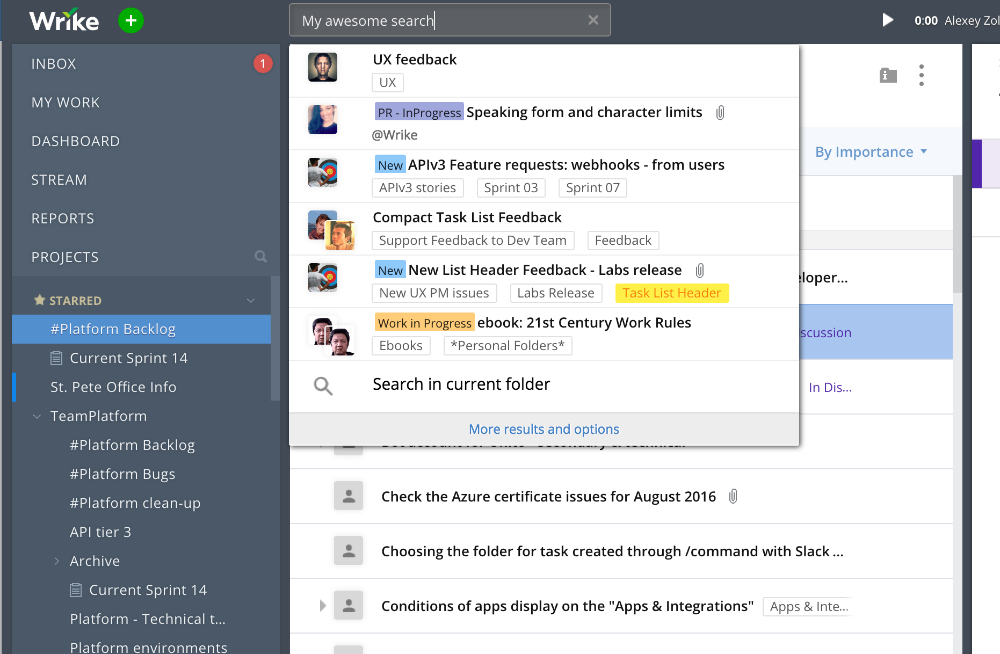

Smart helper for wrike
Alexey Zolotykh
Smart helper for wrike
Helper team
I hesitate to speak English, and so it is the quietest of all the presentation today
Let's start
Small test

Find all the numbers from 1 to 100 per minute
Ready! Steady! Go!
Are you seriously!?
In fact, solving a puzzle on average takes from 10 to 15 minutes
If more than 20, you have a problem
Or you are just very inconsiderate
What's the difference?

The numbers looks simpler

Very hard to find something in a big Wrike account!
There is a solution!
What about search?

We forgot about the buttons and widgets
If we had a universal widget that searches everywhere ...
Search by task title
Search and run by commands
Search by help
Easy to use
Just push
Shift
button
twice
and start
searching
<Shift><Shift>
What happens if you combine the search and action?
Before...
13 sec
6 sec
Our advanced users will be grateful to us
Our new users will be able to quickly learn how to use Wrike
Thank you for attention
Link for working example
login - alexey.zolotykh+test@team.wrike.comment
password - 121212